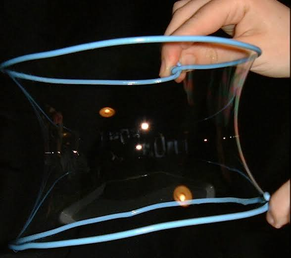

Motivation

Symmetries and conservation laws are at the heart of modern physics, and come to us from classical mechanics. In Part I of this course, we revisit classical physics and learn Lagrangian mechanics. The variational principle states that certain integrals over a path or surface are extremized in nature — this yields the correct equations of motion for mechanical (and many other) systems. These methods can help us understand central-force motion, motion in accelerated reference frames, and more! We will understand that for every symmetry, nature furnishes a conserved quantity. We study classical mechanics in this way to facilitate the classical–quantum transition, and to equip us to solve diverse problems, from engineering to astrophysics and beyond.
We also study classical mechanics because it continues to yield surprises, such as the onset of chaos in deterministic systems. Lagrange's equations are essential in my cosmology research, where they can be used to understand the dynamics of the axion (a hypothetical dark matter particle) or of inflation (an epoch of accelerated expansion in the first 10−43 s of cosmic time).
In Part II, we will learn about fluid dynamics, important in systems as diverse as terrestrial atmospheres, pipes, oceans, blood flows, car traffic patterns, and accretion disks around black holes. You will learn to analytically solve for flows in a variety of geometries and regimes (turbulent and laminar), to describe the properties of flows, to manipulate the fluid stress tensor, and to analyze sound waves and shocks. This exciting subject is usually neglected in undergraduate curricula, so I hope that you enjoy the opportunity to engage the material here. I use the fluid equations almost every day in my research on cosmic structure formation.
If you'd like a .pdf file of this syllabus, click here.
Draft Class Schedule
This is a rough schedule and may change. Regularly check Moodle for updates.
| Week | Topics | Reading | Assignments |
|---|---|---|---|
| Week 1 (8/31–9/4) |
Newton's Laws, momentum conservation (e.g. rocket equation), center of mass, angular momentum. Submit scheduling survey by 9 AM 9/3. | Taylor 1–3.3 | Homework 0 due 9/4 by 5 PM (Gradescope) |
| Week 2 (9/8–9/11) |
Angular momentum, work, energy, conservative forces, path integrals. No class Labor Day (9/6). | Taylor 3.4–4.3 | Homework 1 due 9/11 |
| Week 3 (9/14–9/18) |
Mathematical skill building (e.g. evaluating line integrals, energy diagrams, variational methods) | Taylor 4.4–4.10, 6 | Homework 2 due 9/18; 15-minute quiz |
| Week 4 (9/21–9/25) |
Variational methods (e.g. Brachistochrone), Lagrangian mechanics. 9/21 is Yom Kippur — let me know if you will be away. | Taylor 7.1–7.4 | Homework 3 due 9/25 |
| Week 5 (9/28–10/2) |
Lagrangian mechanics | Taylor 7.5–7.10 | Homework 4 due 10/2; 15-minute quiz |
| Week 6 (10/5–10/9) |
Lagrangian mechanics and central forces | Taylor 8 | Midterm 10/6; No Homework |
| 🍂 Fall Break (10/12–10/18) — Enrichment: Aharanov–Bohm effect (optional, not assessed) | |||
| Week 7 (10/19–10/23) |
Kepler orbits, physics in accelerated reference frames | Taylor 9, 13 | Homework 5 due 10/23; 15-minute quiz |
| Week 8 (10/26–10/30) |
Nonlinear dynamics and chaos | Taylor 12 | Homework 6 due 10/30 |
| Week 9 (11/2–11/6) |
Fluid equations and conservation laws. 11/3 is Election Day! | Lautrup 1, 2.1–2.4, 6.1–6.3, 12.1–12.3, 13.1 | Homework 7 due 11/6 |
| Week 10 (11/9–11/13) |
Bernoulli's equation, vorticity, potential flow | Lautrup 13 | Homework 8 due 11/13 |
| Week 11 (11/16–11/20) |
Viscosity, Reynolds number, channel flow, demos | Lautrup 15, 16 | Homework 9 due 11/20; 15-minute quiz |
| Week 12 (11/23–11/25) |
Channel flow, compressible fluids (+ sound waves). No class 11/26 (Thanksgiving Break). | Lautrup 16 & 14 | — |
| Week 13 (11/30–12/4) |
Sound waves & Turbulence + Fluid Demos | Lautrup 14 & 31 | Homework 10 due 12/4; 15-minute quiz |
| Week 14 (12/7–12/11) |
More fluids (clarification, overflow) + course content review | TBD | Homework 11 due 12/11 |
| Finals (12/13–12/17) |
Final exam review | — | Self-scheduled final exam |
Weekly Course Structure
The mathematical demands of this class are greater than 100/200-level physics classes. Active problem solving is essential, as is keeping up with reading/lectures. Our class will thus use a mixture of lecture and active learning techniques, including in-class problem solving.
Thursdays
- Before class — students should do assigned reading, complete concept tests and reading questions (graded for completion) on Moodle by 11 PM on Wednesday. Students should submit questions on Piazza.
- In class — Prof. Grin will lecture (high-level material overview, some detailed derivation, answering student questions).
Tuesdays
- Before class — students should watch video lecture and submit Piazza questions.
- Prof. Grin will answer student questions at the beginning of class.
- The rest of the class will be devoted to group collaboration on one problem from the week's homework, which will be distributed/provided in class. If you finish the problem, you may work on other problems from the homework.
- TAs & Prof. Grin will circulate to answer questions.
- We will provide hard copies of the textbook or you can bring your own.
- You should begin by writing down key equations, concepts, and a plan to solve the problem, with no electronic/computational aides. Then check in with the TAs and Prof. Grin, who will sign off on your work. Your grade on the in-class problem will depend significantly on this first step in problem solving.
- Continue on to solving the problem in detail (e.g. doing the algebra), using Mathematica and/or a graphing calculator. You should not have any online resources open during this session (even a web browser).
- Submit in-class work at the end of class (you can open a web browser then). Do in-class work using purple pencil or pen (provided), and out-of-class work using another color of your choice. You will have the rest of the week to complete the homework (which will have other problems), due by 11 PM Friday as a single .pdf file in GradeScope.
Textbook
Required Texts
- John R. Taylor, Classical Mechanics, University Science Books, 2004.
- B. Lautrup, Physics of Continuous Matter, Second Edition, CRC Press, 2019.
You may read a physical or Ebook version of these texts on reserve from the library, use one of several copies in the physics lounge, or purchase it. It is important that you do all assigned reading prior to class sessions. This is an advanced course, and you are ready to take ownership of the material. I can't wait to tackle this fun, and exciting material together!
Other Useful Books
- Goldstein, Safko, and Poole, Classical Mechanics — a classic graduate mechanics text.
- H. M. Shey, div curl grad and all that: an informal text on vector calculus, fourth edition, 2004 — helpful summary of multivariable calculus.
- S. H. Strogatz, Nonlinear dynamics and chaos, second edition, 2015.
- E. Guyon et al., Physical Hydrodynamics, second edition, 2015.
How to Read the Textbook
Your textbook reading should be active: Have a pencil in hand and make notes/do little calculations in a notebook. Follow along with all the derivations and try examples. If you don't understand everything, keep going and circle back to the section with multiple passes. Note what is confusing and ask questions (in class, or via Piazza/Moodle).
Homework
There will be weekly homework assignments, with required problems and some optional ungraded problems to practice. As described above, one problem will be provided during Tuesday's problem solving class. Only some of the other required problems will be graded (you won't know until the homework is returned). All of them will be checked for completion, with solutions provided on Moodle. To keep workflow manageable, you should work on homework throughout the week, come to student hours/problem sessions, and collaborate during group work times. These are essential: hands-on problem solving is indispensable and at the core of physics. Due to the course pace and TA effort, we will not have 2-pass grading.
You must begin the non-in-class problems independently prior to working with your team. Your submitted homework should be your own writeup, and the honor code requires that you not present the work of other humans or AI as if it were your own.
Python Problems
Computation is an important aspect of modern scientific problem solving. In lieu of your in-class problem, each week, we will provide an optional Python programming problem assessing mastery of the same concepts. Programming and computation are not a pre-requisite for this class, and so the analytic/Python problem are equally valued. If you choose the Python problem, you must complete it in class using the KINSC Jupyter hub, without using AI. You may collaborate. Each member of your team should work in their own Jupyter notebook. I recommend making this choice only if you have completed a course on computer programming at Haverford, or if you have spent a full summer (research or other job) doing daily computer programming.
Exams / Quizzes
There will be 6 scheduled low-stakes hand-written in-class quizzes, spread throughout the course and based on recent material — you will have 15 minutes to complete them. The quizzes will have 2–3 questions assessing basic conceptual mastery and some straightforward applications of class content. Quizzes will assess your individual understanding of material. During the quiz, you may use a one-sided cheat sheet that you must write yourself and submit with your quiz.
There will be a 90-minute in-class midterm, and a 3-hour self-scheduled final exam during the final-exam period. You may use Mathematica (but no online help resources or AI) during the exams, as well as graded homework and solution sets. You may use a 2-sided cheat sheet; the rules for the cheat sheet are otherwise the same as for the quizzes.
Grading
The grade will be determined by first computing a numerical grade as follows:
- Homework (32%)
- Quizzes/Exams (54%) — 3% for every quiz during the semester (×6), 12% for the midterm, and 24% for final exam. Scores will be rescaled, first by setting the maximum student grade as 100, and then by adjusting any point deductions such that the class mean is 80 or higher.
- Participation and other contributions (14%) — Due to more extensive expectations, participation is given greater weight than is typical.
The range 60%→100% will be split into bins corresponding to grades (1.0, 1.3, 1.7, 2.0, 2.3, 2.7, 3.0, 3.3, 3.7, 4.0) to assign a course grade. A midterm grade estimate will be generated. 60% and higher is a passing grade. I may drop the lowest homework score depending on overall class performance.
Late Work
Due dates (I prefer the term to deadlines, see here) are part of life, and so it is important that you submit work on time. We will accept late HW with a grade penalty of 10% per day. You may take two 1-week extensions without penalty — but you may not take two in a row. Turn in the scan of a sheet of paper that says "free extension" on GradeScope. These extensions apply only to homework.
HW extensions (with no penalty) are available for health situations, personal/family emergencies (and any other situation that would merit a dean's extension — reach out even before you hear from your dean so I can help). Request an extension as soon as you are aware of the situation (if possible more than 24 hours prior to the due date), but always put your health and safety first. If you have a planned absence (e.g. for a religious observance/sports game, etc.), please let me know a week or more prior to coordinate a plan to complete HW. We will accommodate long-term health challenges (beyond a 3–4 day period); these must be coordinated with your dean. Make-up quizzes and exams will be provided in health/family emergencies and for religious observances (in this case, please provide 1-week notice). Participation requirements during excused absence will be waived. Other late work will not be accepted.
Honor Code
The guiding principle of academic integrity is to never represent the work of others as your own. Please follow these guidelines:
Collaboration
- You will spend one class session a week on a collaborative homework problem. Unless other HW problems are marked individual, you may collaborate, but you must first attempt each problem (jot down key concepts, equations, and a rough plan — it is OK if you get stuck and discuss once you begin to collaborate).
- Directly copying or photographing group work from a shared board is an honor-code violation. After collaboration write up your own solution.
- No collaboration on quizzes/exams.
Other Guidelines
- Do not post materials on Chegg/other websites, look up solutions on the Internet, or google key phrases in the question.
- Please request clarification from me if you find yourself in any ambiguous situations. Consult Honor Council resources at: honorcouncil.haverford.edu/resources/. Code violations will be reported to Honor Council.
Mathematica
- You may use Mathematica to do algebra & numerical work (HW, but see above, & exams).
- Try to do straightforward algebra without Mathematica, so that you don't become too dependent on it.
- Attach your Mathematica notebook to your assignments. You may collaborate, but you must create and submit your own notebook, individually entering in all equations.
- Disable your computer's WiFi during exams as Mathematica help pages can link to un-allowed resources.
Artificial Intelligence (AI)
- Large Language Models (LLM) can provide rather complete responses to increasingly complex queries on mathematical/scientific topics. However, they can hallucinate, confuse concepts, or seriously run astray on some straightforward exercises.
- You are not forbidden using AI on the out-of-class HW exercises, but you are strongly discouraged from doing so. There is benefit in building understanding by "doing stuff the old fashioned way" to facilitate correct use of AI after you achieve mastery. Heavy AI use will impede your learning. Use of LLMs is not allowed during collaborative in-class work, or during quizzes/exams.
- If you use an LLM on a HW:
- Start the problem, write down key equations, and formulate a strategy before using AI.
- State what AI tool you used, paste all AI interaction into the HW, and clearly state which part of the work you did unassisted — your prompt should be a specific question and not a request for AI to solve the problem. We will grade by assigning credit proportionally to our own assessment of how much of the work you did, and how much of the AI's work you checked.
- Check all AI statements/steps by looking through course notes/text and correcting any mistakes.
- You may use AI to suggest strategies to avoid tedious algebra (but be sure to tell the LLM to not just give away the answer), or to get started if you are truly stuck. AI is clumsy with numerical calculations and algebra; Mathematica is a better tool here.
References
Cite any references you use other than Taylor/Lautrup. If a tutor gives you solutions to a problem, do not use them, and tell them that this is not allowed. Do not look at posted solutions until after you have turned in the assignment (e.g. if you have an extension).
Classroom Norms
Values of This Class
Every single student in this class belongs here! The physics community is struggling to overcome a legacy of elitism and demographic homogeneity (due to racism, sexism, ableism, homophobia, anti-Semitism, anti-Asian hate, Islamophobia, transphobia, and others). We will create a classroom environment (this includes Moodle, Piazza, student hours, problem sessions...) where all can learn (free of harassment). Inappropriate behavior includes any conduct (including jokes), verbal or physical, on or off campus, that interferes with an individual's or group's educational performance at Haverford or creates an intimidating, hostile, or offensive environment.
These include negative remarks or actions based on race, ethnicity, gender, disability, sexual orientation, gender identity, religion, age, nationality, or other group association. These remarks may be unintentional. If a peer tells you that your behavior is making them feel othered or excluded, halt the behavior, apologize, and avoid the behavior in the future. This is the oops, ouch! model. If you have to ask "is this comment/joke OK in a professional space?" you probably shouldn't do it in a class space. Be kind and be professional! This is required by professional norms and is part of your physics training.
We will follow the APS code of conduct. As a department, we read peer-reviewed literature and professional society recommendations on how to be inclusive, and are also open to your suggestions about ways we can make our teaching and community more welcoming.
College Policies
If you have experienced any form of gender or sex-based discrimination, harassment, or violence, know that help and support are available. Staff members are trained to support students in navigating campus life, accessing health and counseling services, providing academic and housing accommodations, and more.
The College strongly encourages all students to report any incidents of sexual misconduct. Please be aware that all Haverford employees (other than those designated as confidential resources such as counselors, clergy, and healthcare providers) are required to report information about such discrimination and harassment to the Bi-College Title IX Coordinator.
Information about the College's Sexual Misconduct policy, reporting options, and a list of campus and local resources can be found on the college's website. If you have any concerns of inappropriate behavior that you experience or witness, you are welcome to address these concerns with me or another trusted CAPS counselor, support staff, or faculty member.
For resources on dealing with concerns, see the College's discrimination and harassment policies, sexual misconduct policies, and confidential reporting mechanisms.
Communication / Getting Help
I am accessible by email Mon–Fri between 9 AM and 5 PM, and will reply by the end of the next work day. The easiest way to fail in upper level physics is to not get help when you need it or fall behind. I encourage the use of peer tutors and study groups. I will reach out if you miss due dates. Student hours and weekly problem sessions are times set aside for you! Please come and ask questions.
The Office of Academic Resources (OAR) is on the first floor of Stokes, and can help you navigate Haverford from customs to commencement. Their services are free and unlimited. You're welcome to come study, relax, caffeinate, and connect with peers or staff committed to your success and well being. They offer services, workshops, study breaks, academic coaching, and peer tutoring. Visit haverford.edu/oar to learn more and/or schedule an appointment.
Statement of Accessibility
Haverford College is committed to supporting the learning process for all students, and providing equal access to students with a disability. Contact me as soon as possible if you are having difficulties in the course. There are many resources on campus available to you, including the Office of Academic Resources (haverford.edu/oar) and the Office of Access and Disability Services (haverford.edu/access-and-disability-services).
If you have (or think you have) a learning difference or disability including mental health, medical, or physical impairment, contact the Office of Access and Disability Services (ADS) at hc-ads@haverford.edu. The Coordinator will confidentially discuss the process to establish reasonable accommodations. Students who have received academic accommodations and want to use them should share their verification letter with me and meet with me ASAP to discuss their specific accommodations. Accommodations are not retroactive and require advance notice.
Participation
In-class participation has a number of equally important contributions:
- Complete concept tests and reading questions on Moodle.
- Participate on Piazza OR in-class discussions (questions to professor and interactions with peers/team-mates equally valued).
- Work collaboratively with classmates on group exercises.
This is done to credit varied forms of engagement — collaborative work and individual curiosity are both very valuable. Not all thrive in large group settings, so online engagement is given equal weight. This is done both as training for collaborative work and to foster an inclusive physics community.
How Participation Fits Into Your Grade
Participation and other contributions account for 14% of the final grade. This is given greater weight than is typical due to the more extensive expectations in this course. See the Assignments & Grading tab for the full grading breakdown.